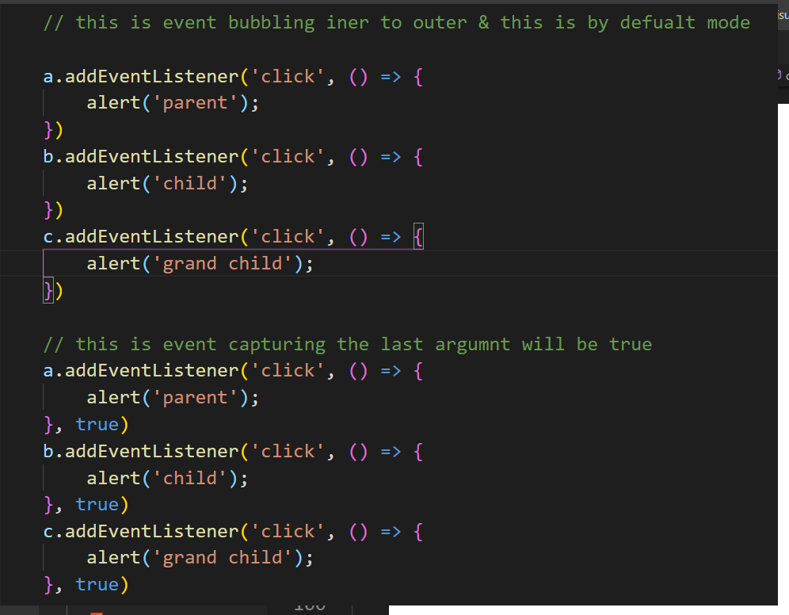

Event Bubbling − Whenever an event happens on an element, the event handlers will first run on it and then on its parent and finally all the way up to its other ancestors.
Event Capturing- It is the reverse of the event bubbling and here the event starts from the parent element and then to its child element.
parent

child
grand child